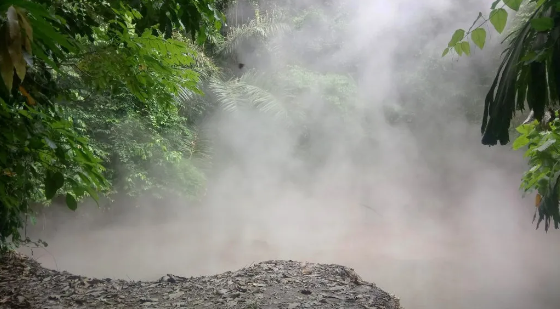
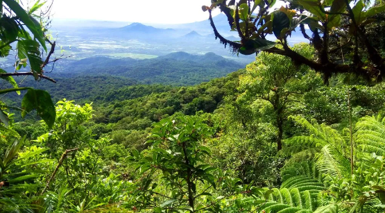
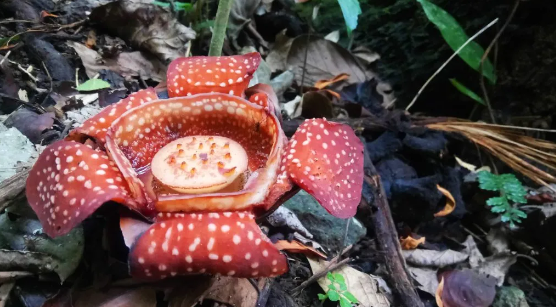
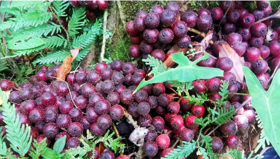
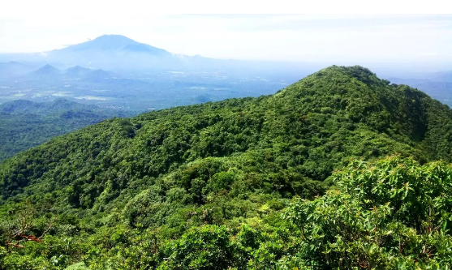

Mount Makiling
Looking for a daunting mountain to hike these holidays? Check out Mt Makiling, one of the most popular peaks in the Philippines. Also known as the Mount Makiling Forest Reserve, Mt Makiling is not only a fabled mountain but a wildlife sanctuary of endangered species. It’s famous as an ecological and wildlife reserve. Mt Makiling, a dormant volcano, plays a popular role in Philippine mythology. It is named after a maiden spirit named Makiling. Makiling is said to guard the mountain, and modern sightings of her have been reported. It is an Mt Makiling story one should hear. Mt Makiling stands at more than 1090 MASL. It is definitely among the places you should go to when your wanderlust strikes. After all, it’s very much accessible from Metro Manila.
- Mt Makiling Location: Between Laguna province & Batangas
- Entrance Fee: Php 10 per person
- Alternative Jump-Off: Sto. Tomas, Batangas
- Estimated Time for Hiking: 4-6 hours
- Difficulty: 4/9, Minor Climb
- Special Features: Rafflesia, Mossy Forests, Dipterocarp forests
- Mt. Makiling Hike Traverse: Santo Tomas, Batangas to UP Los Banos, Laguna
The mud spring is actually one of the few remaining mud pots left in Mt Makiling. It is highly acidic and sulfuric with steams constantly oozing. The spring emits a rotten egg-like smell. It is one of the volcanic features of the mountain. One of Mt Makiling’s eruptions happened in 1350.
Some Pictures
Pristine forests surround the mud spring.

A partial view of pristine forests of Mt Makiling, the home of the legendary Maria Makiling

Behold this beautiful Rafflesia.

Fig fruits abound on the slopes of Mt Makiling. These are foods for birds and other wildlife species

View of the forest and the distant Mt Banahaw as seen from Mount Makiling’s peak